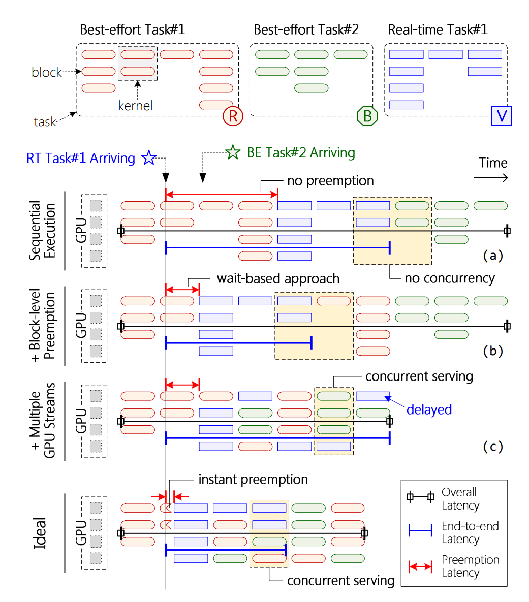
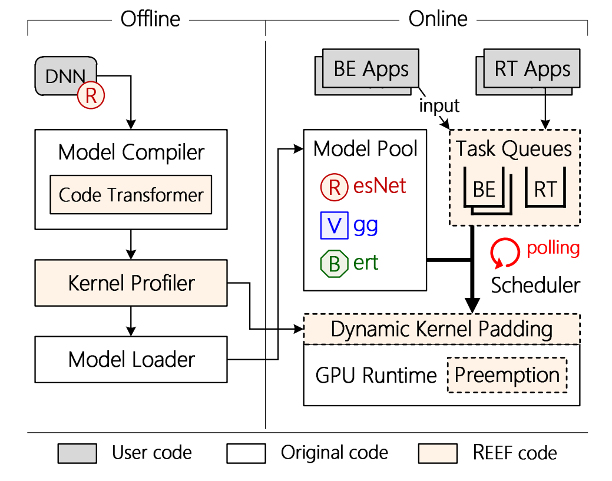
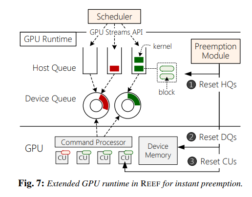

这篇论文是我在面试 IPADS 实验室时选读的第一篇论文，主要内容是 GPU 上的任务调度，做的还是非常有意思的。论文地址：Microsecond-scale Preemption for Concurrent GPU-accelerated DNN Inferences，发表于 OSDI’22。
1 Intro
这篇文章把 DNN inferences task 分成两种类型：
- real-time task, latency-critical，例如自动驾驶里的障碍识别、红绿灯识别
- best-effort task，对 real-time 要求不高。比如观测驾驶员的情绪和疲劳程度。
DNN inferences 有两种潜在可能相悖的目标：
- real-time tasks 应该被当成 scheduling 的一等公民，不能被其它 task interference。要达到尽可能低的 low end-to-end latency。
- real-time tasks 和 best-effort tasks 都应该在 GPU 上并发执行（served concurrently）来达到尽可能高的 throughput。（work-conserving）
目前 state-of-the-art 的 GPU libraries（NVIDIA 的 CUDA 和 AMD 的 ROCm）通常提供了 multiple GPU streams（比如 CUDA Streams），来并发地在同一个 GPU 上执行多个任务。然而，虽然 RT task 的 end-to-end inference latency 比较低并且稳定，但 RT tasks 的 tail latency 随着和 best-effort tasks 并发运行时成数量级增长（接近 50ms）。
类比操作系统里用 preempt scheduling 来提供 real-time 服务的保证，一个符合直觉的方式就是在 GPU scheduling 里也用 preemption（很不幸，在商用 GPUs 里这个工作是缺失的）。
之前的工作提出了一种 wait-based 的方法，它消极地等待 running blocks 的完成，这可能会导致 several milliseconds 的一个 preemption delay。
这篇文章提出了 REEF，第一个带有 microsecond-scale kernel preemptive 以及 controlled concurrent execution 的 DNN inference serving system。特别地，即将到来的 real-time task 应该立即中断正在运行的 best-effort kernels 而不是等它们完成。同时，best-effort kernels 应该并发地被执行，通过使用 real-time kernels 剩下的 GPU 资源。
一个关键的观察是，DNN inference 中的 kernel 通常都是幂等（idempotent）的，也就是说我们可以 kill、restore best-efforts 而不用储存任何 context 信息。基于此 REEF 提出了一个 reset-based 的 preemption 策略。为了彻底清理 GPU runtime 和 devices 上的 kernels，REEF 设计了不同的方法来 reset 不同的软件队列，并且改进了 GPU 驱动来使用现有的硬件机制来 reset 计算单元，同时又保持 GPU 的 device memory。因此 REEF 可以在 10 微妙以内启动一个 real-time task，与被抢占的 kernels 和它们的 execution time 无关。
REEF 进一步提出了一个 dynamic kernel padding 的机制，基于 DNN inferences 的执行时间是确定、可预测的。这意味着 pending 中的 best-effort kernels 可以被精心挑选来 pad real-time kernel（互不干扰），基于预先的离线 profiling 的数据。REEF 扩展了 GPU compiler 来使用函数指针构造一个 padded kernels 的模板。再进一步，为了消除 GPU 上 indirect function calls 的 overhead，REEF 引入了 proxy kernels 来解决寄存器分配问题，并且避免不必要的 context saving。因此，REEF 的代价几乎可以忽略不计。
我们通过扩展 Apache TVM 和 AMD ROCm 来实现 REEF。
2 Background and Motivation
DNN 由许多 layers 构成，比如 conv，pooling 和全连接层。pre-trained DNN model 被预先 load 进 GPU 的 memory。对于每个到来的 request，DNN 里的所有 kernel 都会按输入顺序被执行，然后输出被返回到 DNN application 上。
Idempotence。
Massive kernels。不像传统的 GPU 应用，只含有少量的 kernels，一个现代的 DNN models 通常有成百的 kernels。因此很大数量的 kernels 会被预先 submit 来隐藏 kernel launch time 的时间。进一步地，为了充分利用 GPU，serving system 可能会并发执行多个来自不同 tasks 的 kernels。因此抢占 GPU 的 performance 惩罚还是比较重要的，甚至可以和执行时间相比。
Latency predictability。我们观察到 GPU kernels 的执行时间是确定可预测的。这有两方面原因：首先，kernel 大多是线性代数运算，所以一般没有条件分支和非常量循环；其次，kernel 的输入输出是 fixed-size arrays。
Varied parallelism。DNN inferences 的 GPU kernels 经常需要不同的并行度，因为变化的 input scale。例如 pooling kernel 使用 64 个 thread block 而 softmax kernel 只使用 1 个 thread block。因此 DNN inferences 的计算需求，即 CUs 的个数，在执行中也是不断变化的。因此为了有效利用 GPU，使用一个动态的机制来选择并且执行多个来自不同 DNN inf tasks 的 kernels 是不可避免的。

现有的 state-of-the-art 的 GPU scheduling scheme 可以被概括如下：
Sequential execution。大多数现有的 DNN serving systems，比如 Clockwork，使用 sequential execution 来避免 tasks 之间的冲突。并且其实它们也有先把 RT task 提前。但是它们会等上一个 task 跑完。这样 preemption latency 就很大。并且这种方式没有 concurrency，因此 throughput 也不行。
Block-level preemption。由于在 GPU 上实现 preemptive scheduling 很难（由于很大的 context，即寄存器数量太多了），同时商用 GPU 也缺少对抢占机制的硬件支持。作为妥协，之前的工作提出了一个基于等待的方式来实现 block-level 的抢占。RT task 到达时需要等待之前的 block 运行结束才能抢占。并且 preemption latency 会随着 preempted kernels 的个数而上升。所以之前的工作甚至需要限制向 GPU 提交的 kernels 的个数。并且高频的 RT task 会打断 best-effort tasks 的执行，甚至导致 starvation。
Multiple GPU streams。为了提升吞吐量，现代的 GPU libraries（CUDA，ROCm）通常提供了许多 CPU streams，来并发地执行不同任务上的 kernels。runtime scheduler 会 dispatch kernels 来 keep all CUs busy。但是这种做法有时会延长 RT 的 latency。
3 REEF Arch
DNN model 准备（离线）。DNN models 首先被编译、优化，然后被加载进 model pool。REEF 扩展了 TVM，添加了一个 code transformer module。它首先会 validate 这个 model 里的 kernel 的 idempotence，然后回将 source code 变换来支持 REEF 的 GPU scheduling。此外 REEF 开发了一个 kernel profiler 来测量每个 kernel 的计算要求和执行时间。
DNN inference serving（在线）。REEF 在现有的 sota GPU runtime 上扩展了四个主要的组件来做 inference serving。
- Task Queues。REEF 会维护一个 real-time task queue，和几个 best-effort task queues。每个 queue 都 bound 上一个 GPU stream 来启动 GPU kernels（？）。为了简单化 REEF 一次只执行一个 rt req。REEEF 提供了一个基于 RPC 的接口来让 APP 往 task queue 里发 req。
- Scheduler。REEF 在 task queues 上使用 busy polling 然后将 tasks 分配到相应的 GPU streams。它有两种模式：real-time mode 和 normal-mode。Scheduler 会在遇到 RT task 时从 normal mode 被切换成 real-time mode，然后当 real-time task queue 为空时候切换回来。
- Preemption module。在 normal mode，REEF 并发地使用多个 GPU streams 来执行不同 task queues 里的 best-effort tasks。在 real-time mode，REEF 首先使用 pm 来立刻将 GPU 从所有 be tasks 里抢占，然后立即启动 real-time task。
- Dynamic kernel padding（DKP）。在 real-time 模式，在启动一个 real-time kernel 之前，DKP 会选择合适的 be kernels 然后动态地将它们 pad 到 real-time kernel。
4 Reset-based Preemption
GPU kernels are idempotent -> proactive preemption，也就是可以立即 kill 掉 GPU 上所有 running kernels 然后再之后恢复他们。
然而真正实现 reset-based preemption 仍然有些挑战。除了在 GPU 上 running 的 kernels，成百的被启动的 kernels 许多被 GPU runtime 维护的 queues 中 buffered。这对于隐藏 kernel launch time、充分利用 GPU 并行性是很重要的。然而，evicting 所有 kernels 使得在几十微妙内 preempt 掉所有启动的 kernels 是很难的。

GPU runtime 会对每个 GPU stream 维护一个 host queue（linked list），来 buffer launched kernels。每个 host queue 都有一个背后线程来异步地将 buffered kernels 运送到一个 ring buffer 里，称为 device queue。device queue 被 CPU 和 GPU 同时 access。
GPU 的命令处理器（command processer）会 poll 所有的 device queues 来 fetch kernels 并把它们 dispatch 到运算单元（compute units，CU）上。
因此，一个启动的 kernels 可能会出现在三个地方：HQs，DQs，CUs。instant preemption 必须把这三个地方的 kernels 都 evict 了。
Evicting Buffered Kernels
对于 HQ，reset 它们是很直接的——只要将所有队里的 kernels dequeue 然后重置 memory 就行了，因为它们完全被 GPU runtime 所操控。而对于 DQ，GPU runtime 不能从 DQ 中直接 evict buffered kernels，因为 GPU 可以直接从 DQs 里拿 kernels，这会导致 data races 以及 unpredictable results。此外，CPU 也没有提供一个安全的方式能让我们直接从 DQ 里 evict kernels。一个可能的方法是通知 GPU 重新注册一个 DQ，但是这会带来不可接受的 latency overhead（据他们测试，1ms）。
受到 EffiSha: A Software Framework for Enabling Efficient Preemptive Scheduling of GPU 的启发，我们提出了一个 lazy eviction 来 reset DQs，不用扩展 GPU runtime 以及 hardware。
REEF 的 code transformer 在每个 kernel 的开始处插入一小段 code，这段 code 会 check preemption flag。如果是 true，kernel 会直接终止。当一个 preemption 发生时，preemption 模块会立刻将 GPU memory 的 flag 设成 true。那些 DQ 里的 kernels 仍然会被发送到 CUs 里，但是会立即 terminate。
我们的这个 queue evict 机制有一个 non-trivial 的 overhead —— 大约 500 微秒。进一步深入分析显示，overhead 主要来自于 (a) host queue reclaiming memory，(b) 等待 kernels 从 DQ 里被 fetch 到 CU。因此我们又提出了两种优化来进一步减少 overheads。
Asynchronous memory reclamation. REEF 使用了一个后台的 GC 线程来异步地 reclaim memory。实际操作上，REEF 直接将 host queue 的 head pointer 置为 null，然后 notify GC thread 来 reclaim memory。（代码里有吗？）
Device queue capacity restriction. 每个 kernel 大概要等 20 微秒被发送到 CUs。在 DQ 里 buffer 几百个 kernels 是很常见的，因为这可以减少 context switches 的频率（指从 HQ 里 fetch 一些 kernels 的过程）。这个过程可能将 preemption delay 提升到 1ms 多（只要 kernels 比较多），因此 REEF 限制了 DQ 的容量来实现 microsecond-scale kernel preemption。
当 DQ 容量下降时，preemption delay 当然会下降，但是普通的 execution time 会上升——因为 GPU 需要更多地等待 runtime 去 fill DQ。
实践上我们将 DQ 大小设为 4。
Killing Running Kernels
可惜的是，既没有一个 GPU runtime 的 API、也没有一个 GPU driver 暴露出来的功能能让我们从 host side kill 一个 running kernels。我们观察到 GPU driver 有能力终止 CPU 进程，并且同时 kill 掉相关联的 GPU kernels（即使 kernel 卡在一个 inf loop）。也就是说，这说明 GPU driver 实际上是能 kill 一个未完成的 kernel 的。然而，这个操作同时也会 reclaim 那些被这个 process 和 GPU kernels allocate 的 memory。因此，preempted kernel 需要从 DNN model 里重新加载 parameters 到 GPU memory，这甚至能花几秒钟时间。
REEF 改进了 GPU driver 的 kernel killing function，并且将其暴露在 GPU runtime 的 preemption module。新的 kill 函数会 kill running kernels 但是保存它们在 GPU memory 上的 running state。preemption module 会在 evict HQ & DQ 之后用其 kill CU 上的所有 running kernels。
Restoring Preempted Tasks
BE tasks 需要在 preempted 之后被恢复。总得来说，task 需要从开始被重新执行，并且按照假设这是没有 side effects 的（由 idempotence 保证）。
这个行为可能会带来一些严重的额外开销。首先，由于一个 DNN models 通常含有成百上千个 kernels，因此我们需要从尽量近的 kernel 来 restore 这个 task。不幸的是，我们几乎不可能精确地识别出那些 interrupted kernel——因为 CUs 上运行的 kernel 是直接被 command processor kill 掉的。
为了改进这个问题，REEF 采用了一种近似的方式来保证 preempted task 是从一个很接近 interrupted kernel 的地方恢复的（恢复点距离 interrupt 位置的距离至多是常数 c）。更准确地来讲，preemption module 会首先记录最后一个被发送到 DQ 的 kernel。这样至多重复执行 c+1 kernels。
Preemption on closed-source GPUs
许多商用 GPUs 仍然是闭源的，这使得我们需要将 GPU runtime 视作一个 black box。主要的局限性是我们无法通过 reset CUs 的方式来 kill running kernels。此外，REEF 同样无法直接在 GPU runtime 外操作 HQ 和 DQ。但是很幸运的是，REEF 提出的 lazy eviction scheme 对 GPU runtime 不用做修改。
我们提出了一个限制版本的 reset-based preemption 叫做 REEF-N 来面向 closed-source GPUs。
REEF-N 首先把每个 GPU stream（GPU runtime 提供的抽象）包装成一个 virtual host queue（vHQs）。它会拦截然后 buffer 所有 launched kernels。和 physical HQ 相似的是（GPU runtime 中的），每个 vHQ 也有一个 background thread 来 async 地将 buffered kernels 送到 GPU runtime。REEF-N 将整个 GPU runtime 看成几个 DQs（每个 GPU stream 一个）
这样 REEF 可以很容易地通过 reset vHQ 来 evict buffered kernels（而不用去 reset HQ）。REEF-N 仍然需要等待 lazy eviction 来 reset DQs，等待所有 running kernels 完成。以及为了模仿 DQ capacity 的限制条件，REEF 也限制了 GPU runtime 里的 outstanding kernels 个数。
5 Dynamic Kernel Padding
为了达到高吞吐，RT task 和 BE task 需要在 GPU 上 concurrently 执行。然而，为了避免干扰 RT task，BE task 只能使用 RT task 用剩下的 GPU 资源。很遗憾，现有的方法都没有提供这种并发机制。
首先，使用不同的 GPU streams 来分别启动 RT task、BE task 无法避免互相干扰。首先，GPU streams 之间的 dispatch delay 可能会推出 RT kernels 的执行或者限制可用的资源数（CUs）。使用额外的 inter-stream barriers 来同步 kernel dispatch 也会产生一些 performance overhead。
其次，static kernel fusion 可以将不同 tasks 的许多 kernels 在 compile time 合成单个。它可以预先防止 RT task 和 BE task 的干扰。然而，static kernel fusion 需要预先将所有 DNN kernels 的可能的组合都 pre-compile 一遍——可能性太多，对 memory 要求也很高。
我们的方法：dynamic kernel padding。受到 kernel fusion 的启发，我们的方法也会将 RT kernels 和 BE kernels 混合成一个并且使用单个 GPU stream 来启动它。不同的是，我们构建了一个 template（叫做 dkp kernel）并且通过 function pointer 来在 runtime 调用 kernels。进一步地，我们动态地选择 BE kernels 来防止和 RT kernel 干扰。
dkp kernel 被定义为一个 global funciton。candidate kernel functions (例如 dense) 被声明为独立的 device functions，可以被作为参数传入 dkp kernel 中并且以函数指针的形式调用。一个 dkp kernel 将 CUs 分成以下工作：执行一个 RT kernel 和一系列 BE kernels（并行地）。它首先给 RT kernels 分配足够的 CUs，然后将 leftover CUs 分配给 best effort kernels。
kern_select:
1 | be_kerns, be_argss = kern_select(rt_kern) |
5.1 Efficient Function Pointers
没有特定的优化，原始的设计会显著降低 RT kernels 的 performance，由于 GPU 上 function pointer 的独特特性。我们总结了 GPU 上 function pointer 的两个关键的 performance issues：
- Limited register allocation。和 CPU 程序不同，GPU 需要不同的、但仍然是固定数量的 registers。这是在 compile time 被 count 的，然后 encode 进 model executable 里。这样一个 attribute 阻止我们直接在 GPU kernels 里使用 function pointer，因为被调用的函数使用的 registers 个数无法被 statically 确定。GPU compiler 的默认行为是分配一个预先定义的上界来限制 callee 的寄存器使用，可能会导致溢出到 stack 上导致 poor performance。
- Expensive context saving。GPU 上的间接函数调用要比 CPU 上的 expensive 得多——因为巨量的 context。对于几千个 threads，可能有 MB-sized 的 registers 需要被 save and restore。虽然 compiler 会 inline 一些函数调用，但是 dkp 这种通过函数指针的调用方式无法被 inlined。
REEF 通过引入 global function pointer 替换掉 default 函数指针机制来解决这两个问题。由于 global functions 被看作 kernel entries，compiler 既不给它们设置 register limitations，也不给他们添加 context saving/restoring 的相关代码。因此，将 candidate kernels 定义为 global functions（而不是 device）可以同时解决这两个问题（啊？？？）。由我们观察，candidate kernels 的 context saving 实际上是不必要的，因为在调用 rt_kern 或者 be_kerns[i] 之后 dkp kernel 会立即退出。
然而，一个 global function 不能 call 另一个 global function。所以我们将 indirect function call 改为 assembly code 的 jump 指令，然后手动准备 candidate kernels 的初始状态（通过遵守一些 conventions）。这个方法不用改动 compiler，并且只带来了一点点 function call overhead。
Dynamic register allocation。RT kernel performance 在应用完 global function pointer technique 之后仍然不够理想，这是由于 over-allocation problem。由于需要满足不同 candidate kernels 的 register demand，dkp kernel 需要尽可能多地 allocate 寄存器（即 over-allocation）。
这一现象会降低 CU occupancy（一个 CU 能同时执行多少个 blocks，这取决于一个 block 需要多少资源，比如需要多少寄存器）。
一个直觉上的解决方案是，JIT 地 overwrite 相应的 register count。不幸的是，register count 在离线阶段和 model 一起被 load 进 GPU 的 memory 里。也就是说每次 overwrite 都要一次 CPU-to-GPU 的 memory copy。这严重影响了执行的 performance。
REEF 通过引入一系列 proxy kernels 来解决 dynamic register allocation problem。proxy kernels 大体代码长得就是 dkp kernel 的样子，但是 allocate 不同数量的 registers。然而，如果对每种可能的寄存器数量都产生一个 proxy kernels，数量就太多了。
为了减少 proxy kernel 的数量，我们考虑生成 proxy kernels 来 cover 所有可能的 CU occupancies（而不是 register counts）。
AMD Instinct MI50 GPU 有 10 级 CU occupancy levels。所以我们只需要生成 10 个 proxy kernels，每个 kernels 分配这个 CU occupancy level 的 register count 的上界。scheduler 每次选择最小的能满足 candidate kernel 需要的 proxy kernel。
Dynamic shared memory. 除了 registers，shared memory 的 over-allocation 也会降低 CU occupancy。幸运的是，kernel 函数可以动态地分配 shared memory 的大小，只要在 launch kernel 时候设置一个 property dynamic shared memory。
在 model compilation 时，REEF 将变量从 fixed-size shared memory 的声明转换成 dynamic shared memory，即在 __shared__ 前面加上 extern。因此 shared memory 可以在 runtime 时候设置。
5.2 Kernel Selection
也就是选择 BE kernels 来 pad 那个 RT kernel 的过程。kernel selection policy 要注意避免 BE kernels 对 RT kernel 的 latency 干扰。
REEF 提出了一个贪心的启发式策略来保证 BE 只使用 RT 剩下来的 CU 资源。准确来讲，它首先给 RT kernel 预留足够多的 CUs，然后检查 BE task queues 来选择合适的 blocks 来给剩下的 CUs，直到没有剩余的 CUs。被选择的 BE blocks 应该满足以下两个条件：
- BE kernels 的执行实践应该短于 RT kernel
- BE kernels 的 CU occupancy 应该高于 RT kernel，因为 dkp kernel 的 CU occupancy 是取决于 kernels 的最小值。
虽然这个 kernel selection policy 表现很好，但是仍然比较保守。例如当 BE kernels 的执行时间经常长于 RT kernels 时，dkp 的吞吐提升可能会变得 trivial。
6 Implementation
Model compiler. REEF 扩展了 TVM，写了一个 transform，来给 model 加一个 preemption flag（inject into kernel arguments），以及一系列 proxy kernels。
GPU runtime.
对于 AMD GPUs，REEF 在 ROCm 的 HIP 库上实现了 preemption module。
对于 NVIDIA GPUS，REEF-N intercept 了三个 CUDA APIs（和 kernel launch，stream management 有关系），并且添加了如下操作：
cuStreamCreate，添加一个 vHQ，然后将其和一个 CUDA stream 连起来cuKernelLaunch，buffer 那些在 vHQ 的 launched kernel，以及在 background 不断把它们送到 GPU runtime 去。cuStreamSynchronize
此外，REEF-N 提供了一个新 API
cuResetHQ来 reset vHQ。